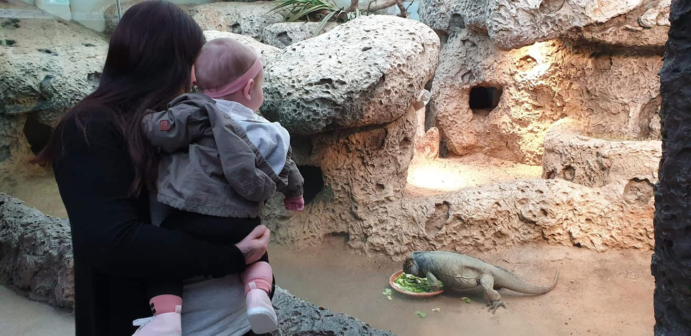
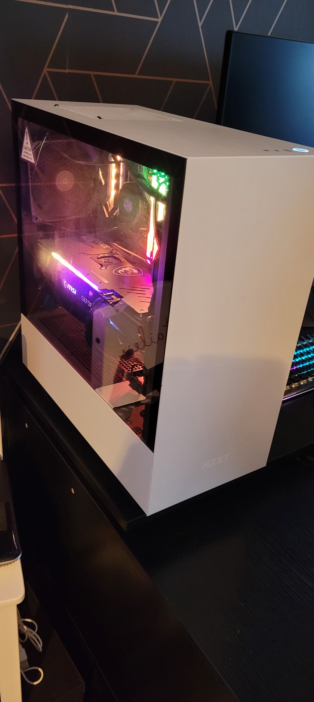
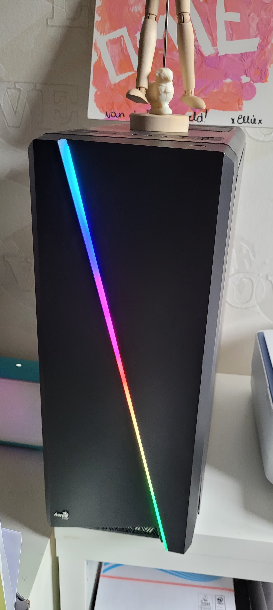
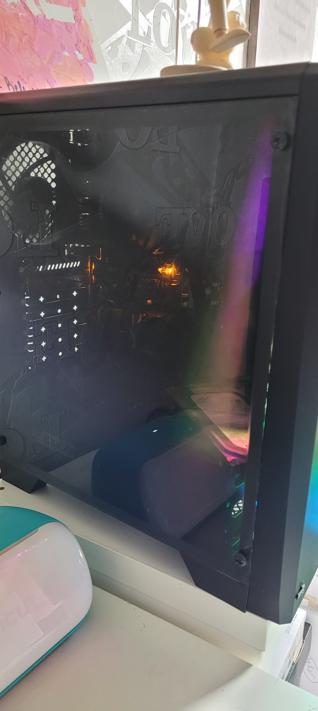
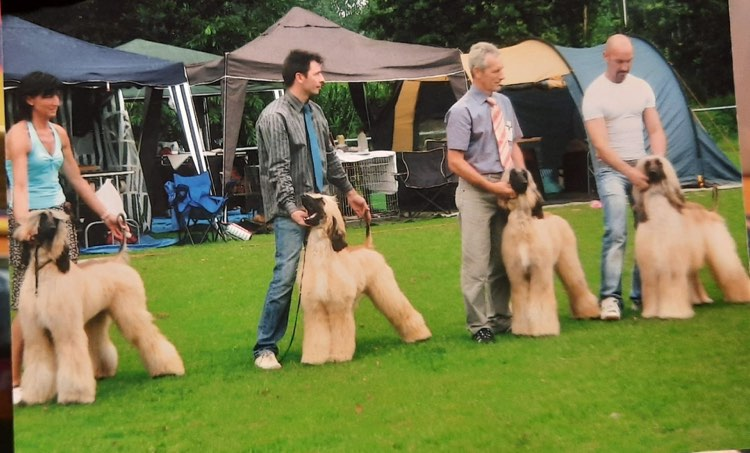
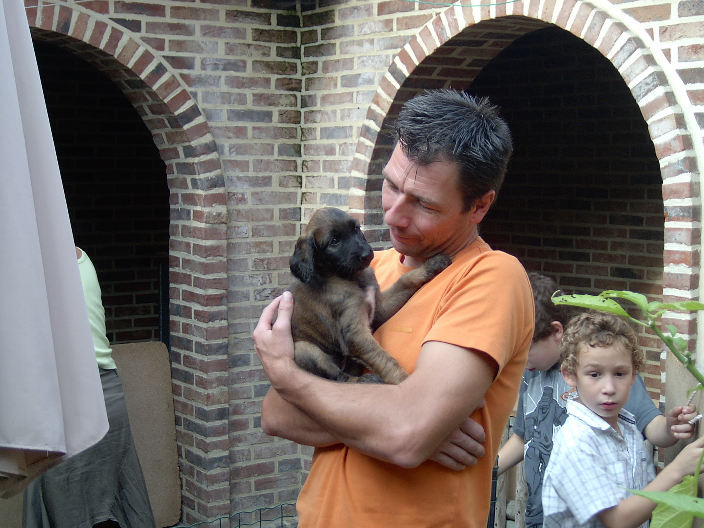

Sybe Lardot
Hobby's / interesses
Met tabel hobby's
Ik heb al heet wat hobby’s gehad en sport gedaan onder andere voetbal, basketbal, judo, zwemmen, gaming en wandelen.
Heel mijn leven is gevuld geweest met sport. Competities spelen, toernooien meedoen, voorstellingen van de sport op school, … Mijn voorkeur lag vooral bij teamsporten.
Mijn eerste sport die ik beoefende was zwemmen. Dit heb ik een aantal jaar met een zwemclub gedaan. Op 8 jaar was ben ik begonnen met basketbal,
dit heb ik dan een tijdje gedaan tot ik overschakelde naar judo tot de gele band. Toen ik 12 was ben ik begonnen met voetbal,
dit heb ik in twee clubs gedaan voor 4 jaar. Dan ben ik ook nog even rugby gaan spelen maar dit kon ik spijtig genoeg niet meer combineren met het werk dat ik op dat moment had.

Regelmatig ga ik met mijn gezin naar de dierentuin voor een gezellig onderonsje. Ook ga ik met mijn dochtertje wandelen in de lokale bossen en parken.
Er gaat niets boven een rustige wandeling in de natuur waar je alles even achter je kan laten en gewoon van het moment genieten.
We gaan vaak wandelen in Meerdalbos, Nieuwenhoven en Ninglingspo, ... Soms komt de oma of een ander familielid mee wandelen en genieten van de frisse buitenlucht.
Regelmatig ga ik ook poolen en biljarten met vrienden en familie. Dankzij mijn vader is dat in de familie gekomen en proberen we om de twee weken eens samen te komen voor een gezellige avond.
Sinds mijn vader overleden is proberen we dit nog vaker te doen om hem samen te herinneren en de goeie momenten die we vroeger altijd hieraan hadden.

Een keer in de maand spreek ik af met vrienden om een kaas en wijn avond te organiseren, dit is beetje een traditie geworden en elke maand is bij iemand anders met andere wijnen en andere kazen.
Mijn voorkeur ligt vooral bij Franse wijnen zoals bordeaux, vooral een Haut Médoc en Margaux en Franse kazen zoals Germain Epoisses, verschillende Brie en Saint-Albray.
Maar ook kan ik eens genieten van een gezellig avondje thuis met het gezin en samen een bordspel spelen, tv kijken of zingen en dansen.
Zolang we ons samen kunnen amuseren is het altijd een geslaagde avond.

In alles rond computers en elektronica heb ik al een jaren lange interesse.
Ik heb zelf al een aantal desktops gebouwd voor vrienden en familie waar ik dan alle nodige software op geplaatst heb.
Als er iets stuk ging van bv gsm’s, printers, controllers, … dan zorgde ik er meestal voor dat deze terug werkte als ervoor.
Elektronica uit elkaar halen, zoeken wat het probleem was en het dan in orde zetten is iets waar ik me altijd wel mee bezig kan houden.
Ook met verschillende soorten software vul ik mijn vrije tijd goed op, nieuwe programma’s leren kennen zoals bv audacity, photoshop vind ik altijd spannend en zo probeer ik altijd iets nieuws te zoeken.
Zo ben ik ook begonnen met programmeren. Door die interesse ben ik dan op zoek gegaan om mijn kennis te verbeteren zodat ik hiermee een job zou kunnen vinden.
Hierdoor ben ik begonnen met een opleiding programmeren bij Thomas More.



Ook ben ik een echte dierenvriend. Heel mijn leven heb ik verschillende soorten dieren gehad. Verschillende rassen van honden, katten, konijnen, vogels en slangen. Ik heb altijd graag gezorgd en mezelf bezig gehouden
met alles omtrent mijn dieren: wandelen, verzorgen, spelen. Mijn ouders gingen vaak naar hondenshows toen ik klein was en ik deed niets liever dan de honden klaar te maken zodat ze er prachtig uitzagen.
Omdat mijn ouders altijd zelf enorm betrokken waren met hun dieren en ook werkte in de branche, ben ik zelf ook een enorme dierenvriend geworden.


| Hobby | Aantal jaar |
|---|---|
| Zwemmen | 2 |
| Basketbal | 1 |
| Judo | 2 |
| Voetbal | 4 |
| Rugby | >1 |